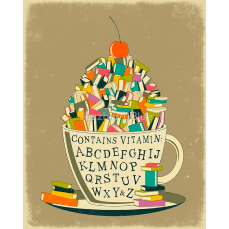
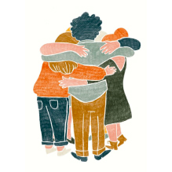
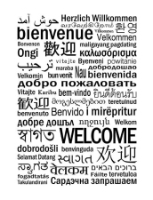

Jem's Den is an independent bookstore located in Edgemont Village. I redesigned the website of an existing bookstore, with a focus on creating a warm, welcoming space for the business.
I drew inspiration from autumn. The colour give a feeling of warm comfort, which will make the user feel welcomed into the store. I also liked the illustrative elements that I gathered,
  I then proceeded to sketch my initial design ideas, and produce grey box wireframes based on these sketched. These determined the main structure of my website. The sketched were done in Procreate, while the wireframes were done in Figma.
I took the wireframes that I had created, and made an initial mock up of my design. This maintained the structure of my wireframes, while adding colour and images.
Based on feedback I received on my initial mock ups, I refined my design, changing some of the structure in the process. I decided to focus on a more illustrative design, instead of having only photo realistic imagery. This design focused on easy to read text, with clear navigation.